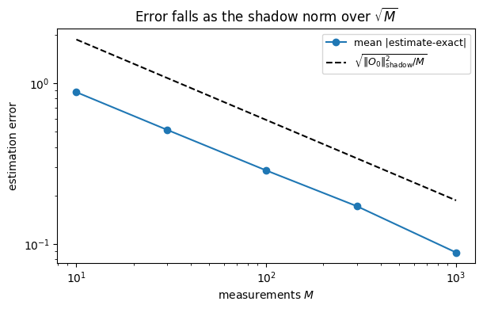

Classical Shadows: How Many Measurements to Predict Many Observables
The classical-shadow channel (Chapter 6) tells us how to invert the random-measurement map. This notebook answers the question that makes shadows useful: given a budget of measurements, how many observables can we predict, and to what accuracy? The answer — \(M\) observables from only \(\mathcal{O}(\log M)\) measurements for bounded-shadow-norm observables — comes from the second Haar moment (unbiasedness) and the third (the variance, i.e. the shadow norm).
Background
A classical shadow protocol repeats a simple loop: apply a random unitary \(\hat U\) drawn from an ensemble, measure in the computational basis to get outcome \(|b\rangle\), and store the classical description \((\hat U,b)\). From each snapshot one builds an unbiased estimator \(\hat\rho\) of the state; the mean of \(\mathrm{Tr}[\hat O\hat\rho]\) over snapshots estimates \(\mathrm{Tr}[\hat O\rho]\). Two moments control everything: the second guarantees the estimator is unbiased (it inverts the measurement channel), and the third sets its variance and hence the number of shots.
Exercise
Use global random Clifford measurements (a 3-design, so Haar to third order). Let \(\rho\) be the unknown \(N\)-qubit state, \(D=2^N\), and \(\hat O\) an observable with traceless part \(\hat O_0\). 1. Show the snapshot \(\hat\rho=(D+1)\,\hat U^\dagger|b\rangle\langle b|\hat U-\mathbb{1}\) is unbiased, \(\mathbb{E}[\hat\rho]=\rho\), by inverting the depolarizing shadow channel (second moment). 2. Show the single-shot variance obeys \(\mathrm{Var}[\hat o]\le 3\,\mathrm{Tr}(\hat O_0^2)\equiv\|\hat O_0\|_{\mathrm{shadow}}^2\) (third moment). 3. Deduce the sample complexity: median-of-means with \(\mathcal{O}\!\big(\log(M/\delta)\,\|\hat O\|_{\mathrm{shadow}}^2/\varepsilon^2\big)\) shots estimates all of \(M\) observables to error \(\varepsilon\). Contrast global with local (random-Pauli) shadows, where \(\|\hat O_0\|_{\mathrm{shadow}}^2\!\sim\!4^{k}\) for a \(k\)-local \(\hat O\), independent of \(N\).
Toolbox
Second moment (the channel). Averaging the snapshot map over a global 2-design gives a depolarizing channel \(\mathcal{M}(\rho)=\mathbb{E}_{\hat U,b}[\hat U^\dagger|b\rangle\langle b|\hat U]=\frac{\rho+\mathrm{Tr}(\rho)\mathbb{1}}{D+1}\), whose inverse is \(\mathcal{M}^{-1}(X)=(D+1)X-\mathrm{Tr}(X)\mathbb{1}\) (Chapter 6).
Third moment (the variance). The variance needs \(\mathbb{E}_{\hat U}[(\hat U^\dagger|b\rangle\langle b|\hat U)^{\otimes3}]\), which for a 3-design equals the Haar average over the symmetric subspace of three copies — the source of the factor \(3\) in the shadow norm.
Solution
Unbiasedness, from the second moment
Fix \(\hat U\); the outcome \(b\) appears with probability \(\langle b|\hat U\rho\hat U^\dagger|b\rangle\). Averaging the raw snapshot \(\hat U^\dagger|b\rangle\langle b|\hat U\) over both \(\hat U\) and \(b\) is the shadow channel; on a \(2\)-design it is depolarizing, \(\mathcal{M}(\rho)=\frac{\rho+\mathrm{Tr}(\rho)\mathbb{1}}{D+1}\), so applying its inverse \(\mathcal{M}^{-1}(X)=(D{+}1)X-\mathrm{Tr}(X)\mathbb{1}\) to each snapshot undoes the averaging exactly: \[\hat\rho=(D+1)\,\hat U^\dagger|b\rangle\langle b|\hat U-\mathbb{1},\qquad \mathbb{E}[\hat\rho]=\rho .\] Hence \(\hat o=\mathrm{Tr}[\hat O\hat\rho]\) is unbiased, \(\mathbb{E}[\hat o]=\mathrm{Tr}[\hat O\rho]\). Only the second moment was needed; the identity part of \(\hat O\) contributes a constant, so from here we keep only its traceless part \(\hat O_0\) and write \(\hat o=(D{+}1)\langle b|\hat U\hat O_0\hat U^\dagger|b\rangle\).
The variance, from the third moment
The variance is where the work is, because \(\hat o^2\) carries three factors of \(\langle b|\hat U(\cdot)\hat U^\dagger|b\rangle\) — one from the outcome probability and two from \(\hat o^2\) — so it is a third-order object in \(\hat U\). Collect the three diagonal matrix elements into a single trace with the computational-basis triple projector \(\Delta_3=\sum_b|bbb\rangle\langle bbb|\): \[\mathbb{E}[\hat o^2]=(D{+}1)^2\sum_b\langle b|\hat U\rho\hat U^\dagger|b\rangle\,\langle b|\hat U\hat O_0\hat U^\dagger|b\rangle^2
=(D{+}1)^2\,\mathrm{Tr}\!\Big[\Delta_3\,\mathbb{E}_{\hat U}\big[\hat U^{\otimes3}(\rho\otimes\hat O_0\otimes\hat O_0)\hat U^{\dagger\otimes3}\big]\Big].\] Two facts do all the work. First, because \(|bbb\rangle\) is permutation-symmetric, every permutation operator fixes it, so \(\mathrm{Tr}[\Delta_3\,V(\sigma)]=\sum_b\langle bbb|V(\sigma)|bbb\rangle=D\) for every\(\sigma\in S_3\). Second, the third moment of a \(3\)-design (global Clifford) equals the Haar one, \(\mathbb{E}_{\hat U}[\hat U^{\otimes3}X\hat U^{\dagger\otimes3}]=\sum_{\sigma,\tau\in S_3}\mathrm{Wg}(\tau\sigma^{-1})\,\mathrm{Tr}[XV(\tau)]\,V(\sigma)\). Inserting both and using the design identity \(\sum_{\sigma}\mathrm{Wg}(\tau\sigma^{-1})=\tfrac{1}{D(D+1)(D+2)}\) (independent of \(\tau\)), \[\mathbb{E}[\hat o^2]=(D{+}1)^2\,D\!\sum_{\sigma,\tau}\mathrm{Wg}(\tau\sigma^{-1})\,\mathrm{Tr}[(\rho\otimes\hat O_0\otimes\hat O_0)V(\tau)]
=\frac{D+1}{D+2}\sum_{\tau\in S_3}\mathrm{Tr}\big[(\rho\otimes\hat O_0\otimes\hat O_0)V(\tau)\big].\] Now evaluate the six permutations. Each \(\mathrm{Tr}[(\rho\otimes\hat O_0\otimes\hat O_0)V(\tau)]\) factorizes over the cycles of \(\tau\), and \(\mathrm{Tr}\,\hat O_0=0\)kills every permutation that leaves an \(\hat O_0\) in a cycle by itself: the identity gives \(\mathrm{Tr}(\rho)(\mathrm{Tr}\hat O_0)^2=0\), and \((12),(13)\) give \(\mathrm{Tr}(\rho\hat O_0)\,\mathrm{Tr}\hat O_0=0\). Only three survive — \((23)\) pairs the two \(\hat O_0\)’s, \(\mathrm{Tr}(\rho)\mathrm{Tr}(\hat O_0^2)=\mathrm{Tr}(\hat O_0^2)\), and the two \(3\)-cycles each give \(\mathrm{Tr}(\rho\hat O_0^2)\) — so \[\boxed{\;\mathbb{E}[\hat o^2]=\frac{D+1}{D+2}\Big[\mathrm{Tr}(\hat O_0^2)+2\,\mathrm{Tr}(\rho\hat O_0^2)\Big].\;}\] Subtracting \(\mathbb{E}[\hat o]^2=\mathrm{Tr}(\hat O_0\rho)^2\ge0\) and bounding \(\tfrac{D+1}{D+2}\le1\) and \(\mathrm{Tr}(\rho\hat O_0^2)\le\max_\rho\mathrm{Tr}(\rho\hat O_0^2)=\|\hat O_0^2\|_\infty\le\mathrm{Tr}(\hat O_0^2)\), \[\mathrm{Var}[\hat o]\le\mathrm{Tr}(\hat O_0^2)+2\max_\rho\mathrm{Tr}(\rho\hat O_0^2)\le 3\,\mathrm{Tr}(\hat O_0^2)\equiv\|\hat O_0\|_{\mathrm{shadow}}^2 .\] This derives the global shadow norm the main text quotes: the factor \(3\) is one part from the two \(\hat O_0\)’s meeting under \((23)\) and two parts from the \(3\)-cycles, all riding on the third-moment identity above.
From variance to sample complexity
Averaging \(M\) independent snapshots divides the variance by \(M\), so \(\mathcal{O}(\|\hat O_0\|_{\mathrm{shadow}}^2/\varepsilon^2)\) snapshots estimate one observable to error \(\varepsilon\). To control \(M\) observables simultaneously one replaces the sample mean by a median of means: split the data into \(\mathcal{O}(\log(M/\delta))\) batches, average within each, take the median. Chebyshev on each batch plus a median boost give, for all \(M\) observables to error \(\varepsilon\) with failure probability \(\delta\), \[M_{\mathrm{shots}}=\mathcal{O}\!\left(\frac{\log(M/\delta)}{\varepsilon^2}\,\max_i\|\hat O_{0,i}\|_{\mathrm{shadow}}^2\right).\] The dependence on the number of targets is only \(\log M\): exponentially many observables from a logarithmic number of measurements — provided the shadow norm stays bounded.
Which shadows for which observables
The shadow norm decides feasibility. For global Clifford shadows \(\|\hat O_0\|_{\mathrm{shadow}}^2=3\,\mathrm{Tr}(\hat O_0^2)\) is \(\mathcal{O}(1)\) for a rank-one observable (fidelity estimation) but \(\sim3D\) for a single global Pauli — cheap for low-rank targets, hopeless for local ones. Local (single-qubit random Pauli) shadows invert a factorized channel \((\mathcal{M}^{(1)})^{-1}(\hat\sigma)=3\hat\sigma-\mathrm{Tr}(\hat\sigma)\mathbb{1}\), and a \(k\)-local Pauli then has shadow norm \(\sim4^{k}\) (the \(3^k\) single-qubit factors times a normalization), set by its weight and independent of \(N\) — the property that makes local shadows scale.
Code
import numpy as np, matplotlib.pyplot as pltrng=np.random.default_rng(0)def haar(D): Z=rng.standard_normal((D,D))+1j*rng.standard_normal((D,D)); Q,R=np.linalg.qr(Z)return Q@np.diag(np.diag(R)/np.abs(np.diag(R)))def snapshot(U,b,D): col=U.conj().T[:,b:b+1];return (D+1)*(col@col.conj().T) - np.eye(D)print("Checking: unbiasedness, the derived E[o^2], and the shadow-norm bound (global Haar/Clifford)")print(" N E[o] vs Tr(Orho) E[o^2] vs (D+1)/(D+2)[Tr O0^2+2Tr(rho O0^2)] Var <= 3 Tr(O0^2)")for N in [1,2,3]: D=2**N v=rng.standard_normal(D)+1j*rng.standard_normal(D); v/=np.linalg.norm(v); rho=np.outer(v,v.conj()) Oh=rng.standard_normal((D,D))+1j*rng.standard_normal((D,D)); O=(Oh+Oh.conj().T)/2 O0=O-np.trace(O).real/D*np.eye(D); exact=np.trace(O@rho).real oh=[]for _ inrange(15000): U=haar(D); p=np.clip(np.diag(U@rho@U.conj().T).real,0,None); p/=p.sum() b=rng.choice(D,p=p); oh.append(np.trace(O@snapshot(U,b,D)).real) oh=np.array(oh) Eo2_pred=(D+1)/(D+2)*(np.trace(O0@O0).real+2*np.trace(rho@O0@O0).real) # the derived intermediate bound=3*np.trace(O0@O0).realprint(f" {N}{np.mean(oh):+.4f} vs {exact:+.4f}{np.mean(oh**2):8.3f} vs {Eo2_pred:8.3f}{np.var(oh):8.3f} <= {bound:8.3f}")print("\\nUnbiased; the third-moment E[o^2] matches the derived closed form; Var stays under 3 Tr(O0^2).")
Checking: unbiasedness, the derived E[o^2], and the shadow-norm bound (global Haar/Clifford)
N E[o] vs Tr(Orho) E[o^2] vs (D+1)/(D+2)[Tr O0^2+2Tr(rho O0^2)] Var <= 3 Tr(O0^2)
1 -0.1486 vs -0.1193 3.950 vs 4.039 3.928 <= 8.078
2 -0.1576 vs -0.1170 13.360 vs 13.620 13.335 <= 30.326
3 +0.4153 vs +0.4886 63.643 vs 63.664 63.470 <= 181.422
\nUnbiased; the third-moment E[o^2] matches the derived closed form; Var stays under 3 Tr(O0^2).
Code
# sample-complexity scaling: estimation error falls as 1/sqrt(M_shots) at the shadow-norm rateN=2; D=2**Nv=rng.standard_normal(D)+1j*rng.standard_normal(D); v/=np.linalg.norm(v); rho=np.outer(v,v.conj())Oh=rng.standard_normal((D,D))+1j*rng.standard_normal((D,D)); O=(Oh+Oh.conj().T)/2O0=O-np.trace(O).real/D*np.eye(D); exact=np.trace(O@rho).real; bound=3*np.trace(O0@O0).real# precompute a pool of single-shot estimatespool=[]for _ inrange(40000): U=haar(D); p=np.clip(np.diag(U@rho@U.conj().T).real,0,None); p/=p.sum(); b=rng.choice(D,p=p) pool.append(np.trace(O@snapshot(U,b,D)).real)pool=np.array(pool)Ms=[10,30,100,300,1000]; err=[]for M in Ms: e=[abs(np.mean(rng.choice(pool,M))-exact) for _ inrange(400)] err.append(np.mean(e))fig,ax=plt.subplots(figsize=(6.2,4))ax.loglog(Ms,err,"o-",label="mean |estimate-exact|")ax.loglog(Ms,[np.sqrt(bound/M) for M in Ms],"k--",label=r"$\sqrt{\|O_0\|^2_{\rm shadow}/M}$")ax.set_xlabel("measurements $M$"); ax.set_ylabel("estimation error")ax.set_title("Error falls as the shadow norm over $\\sqrt{M}$"); ax.legend(fontsize=9)plt.tight_layout(); plt.show()print("Error ~ shadow-norm / sqrt(M): M ~ ||O||^2_shadow / eps^2 shots per observable; log M for many via median-of-means.")

Error ~ shadow-norm / sqrt(M): M ~ ||O||^2_shadow / eps^2 shots per observable; log M for many via median-of-means.
The local advantage: shadow norm independent of \(N\)
For local (single-qubit random-Pauli) shadows, a \(k\)-local Pauli observable has shadow norm \(\sim 4^k\), set by its weight, not the system size. We check that the estimation cost of a fixed 1-local Pauli does not grow with \(N\).
Code
# random single-qubit Pauli shadows; shadow norm of a 1-local Pauli is 3 (=4^1 up to the traceless convention), N-independentpaulis={'X':np.array([[0,1],[1,0]],complex),'Y':np.array([[0,-1j],[1j,0]]),'Z':np.array([[1,0],[0,-1]],complex)}I2=np.eye(2)def local_pauli_shadow_var(N,target_site,nshot=8000): D=2**N v=rng.standard_normal(D)+1j*rng.standard_normal(D); v/=np.linalg.norm(v); rho=np.outer(v,v.conj()) O=1for q inrange(N): O=np.kron(O, paulis['Z'] if q==target_site else I2) # 1-local Z on target_site oh=[]for _ inrange(nshot):# per qubit choose random Pauli basis, measure est=np.ones(1,complex) Us=[]; Ufull=1for q inrange(N): P=rng.choice(['X','Y','Z']);# eigenbasis of P as measurement U (rows = eigenvectors) w,U1=np.linalg.eigh(paulis[P]); Ufull=np.kron(Ufull,U1.conj().T) Us.append((P,U1)) p=np.clip(np.diag(Ufull@rho@Ufull.conj().T).real,0,None); p/=p.sum(); b=rng.choice(D,p=p) bits=[(b>>(N-1-q))&1for q inrange(N)]# single-qubit inverse: 3 U^d|b><b|U - I per qubit snap=1for q inrange(N): P,U1=Us[q]; col=U1[:,bits[q]:bits[q]+1]; s=3*(col@col.conj().T)-I2; snap=np.kron(snap,s) oh.append(np.trace(O@snap).real)return np.var(oh)print(" 1-local Z observable, random-Pauli shadows: variance vs N (should be ~N-independent, ~3)")for N in [1,2,3,4]:print(f" N={N}: Var[o-hat] = {local_pauli_shadow_var(N,0):.3f}")print("\\nThe shadow-norm cost of a local observable is set by its weight, not N: local shadows scale to large systems.")
1-local Z observable, random-Pauli shadows: variance vs N (should be ~N-independent, ~3)
N=1: Var[o-hat] = 2.932
N=2: Var[o-hat] = 2.962
N=3: Var[o-hat] = 2.741
N=4: Var[o-hat] = 3.022
\nThe shadow-norm cost of a local observable is set by its weight, not N: local shadows scale to large systems.
Adversarial check — every identity, machine-verified
Classical shadows turn low-order Haar randomness into a measurement primitive with a provable, and often mild, cost. The second moment makes the estimator unbiased; the third moment sets its variance through the shadow norm, and median-of-means converts a per-observable cost into \(\mathcal{O}(\log M)\) scaling in the number of observables. Global shadows are cheap for low-rank observables; local shadows are cheap for local ones, with a cost fixed by weight rather than system size — the property that makes them practical on real processors.
Honest scope. The clean \(\mathrm{Var}\le 3\,\mathrm{Tr}(\hat O_0^2)\) and \(4^k\) local norm assume exact\(2\)- and \(3\)-designs (random Clifford / single-qubit Cliffords). An approximate design leaves the shadow channel slightly non-depolarizing, so the exact inverse is the wrong inverse and biases the estimate — a bias that does not average away (Chapter 6). Shadows need designs to be inverted, not merely averaged.
Connections
Built on the shadow channel (its inverse) and the same Weingarten second moment as the QFI and barren-plateau flagships — here pushed to the third moment for the variance.
The shadow norm is the tomographic counterpart of the metrological QFI: both quantify how much a random measurement frame reveals about a fixed target.